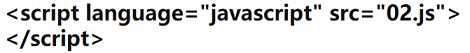
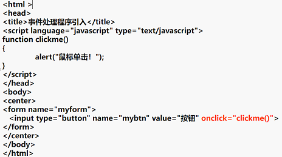

内容简介
1.JavaScript脚本执行原理
用户输入->发送请求->客户端请求含JS的页面->应用服务器->从服务器端下载含JavaScript的页面->返回响应->解析HTML标签和JavaScript脚本
2.JavaScript脚本基本结构
- JavaScript是一种基于对象和事件驱动的客户端脚本语言,并具有相对的安全性,主要用于创建交互性较强的动态页面.其主要特点是:
2.1 JavaScript脚本编辑器
编写JavaScript脚本代码可以选择普通的文本编辑器也可以选择专业网页开发工具，常用的工具有：
- 文本编辑器
- 记事本
- EditPlus
- UltraEdit
- 网页开发工具
- Dreamweaver
- SublimeText
- Webstorm
- HBuilder
2.2.1通过<script>与</script>标记引入
- Language属性:指定封装代码的脚本语言及版本
- type属性:指定插入脚本代码类型
- src属性:用于将外部的脚本文件内容嵌入到当前文档中
2.2.2通过<script>标记的src引入
- 
- (1)在文本编辑器中编辑代码并将其保存为02.js ，引入时注意目录。
- (2)如果脚本程序较长或者同一段脚本可以在若干个Web页中使用，则可以将脚本放在单独的一个.js文件里，然后链接到需要它的HTML文件，这相当于将其中的脚本填入链接处。
- (3)要引用外部脚本文件，使用<SCRIPT>标记的SRC属性来指定外部脚本文件的URL。
2.2.3通过JavaScript伪URL引入
- 伪URL地址的一般格式：
- JavaScript:alert(“鼠标单击”)
2.2.4通过HTML文档事件处理程序引入
- 开发者可以给HTML文档中设定不同的事件处理器，通常是设置某HTML元素属性来引用一个脚本，属性一般以on开头。
- 
2.3 嵌入JavaScript脚本代码的位置
- JavaScript脚本代码可放在HTML文档中任何需要的位置。
- 在<head></head>标记对之间放置
- 在<body></body>标记对之间放置
- 在两个标记对之间混合放置
3.常用的输入输出语句
1. 警告对话框alert( )
- alert( )方法会创建一个警告框，用于将浏览器或文档的警告信息传递给客户。参数可以是变量、字符串或表达式，警告框无返回值。
- alert( )方法的基本语法格式：alert( “提示信息”);
2. 提示对话框prompt( )
- prompt( )方法会弹出一个提示对话框框，用于收集客户关于特定问题的反馈信息，提示框具有返回值。
- prompt ( )方法的基本语法格式：prompt(“提示信息”,”输入框的默认信息”);
3. 输出document.write( )
- document.write( )方法可以向文档写文本、HTML表达式或JavaScript代码。
- document.write( )方法的基本语法格式：document.write(“输出内容” )；